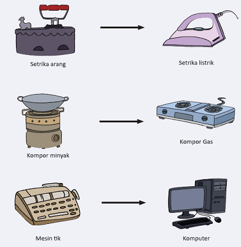

Ayo Lakukan
Activity
Jawablah pertanyaan berikut!
1. Alat apa yang digunakan oleh Kakek Udin untuk menggemburkan tanah?
2. Alat apa yang digunakan oleh Paman Udin untuk menggemburkan tanah?
3. Apakah peralatan mereka sama?
4. Alat mana yang menggunakan mesin?
5. Sebutkan perbedaan kedua alat itu?
6. Menurutmu, alat mana yang lebih cepat untuk mengolah tanah?
7. Menurutmu alat apa yang digunakan untuk mengemburkan tanah pada masa depan?
Diskusikan hasil jawaban kamu dengan teman sebelah kamu!
Teknologi masa lalu lebih sederhana dan hasilnya pun terbatas. Teknologi masa kini biasanya
menggunakan mesin yang memudahkan pekerjaan manusia.
Gambar dibawah ini adalah contoh lain perkembangan teknologi dari masa ke masa.
